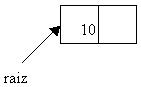
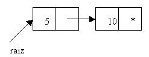
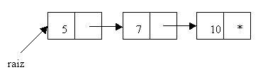
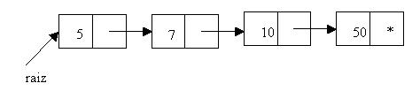

- Estructuras dinámicas: Listas genéricas ordenadas |
Una lista genérica es ordenada si cuando insertamos información en la lista queda ordenada respecto al campo info (sea de menor a mayor o a la inversa)
Ejemplo:
listaOrdenada.insertar(10)
listaOrdenada.insertar(5)
listaOrdenada.insertar(7)
listaOrdenada.insertar(50)
Podemos observar que si recorremos la lista podemos acceder a la información de menor a mayor.
No se requiere un método para ordenar la lista, sino que siempre permanece ordenada, ya que se inserta ordenada.
public class ListaOrdenada {
class Nodo {
int info;
Nodo sig;
}
private Nodo raiz;
public ListaOrdenada() {
raiz=null;
}
void insertar(int x)
{
Nodo nuevo = new Nodo ();
nuevo.info = x;
if (raiz==null) {
raiz=nuevo;
} else {
if (x<raiz.info) {
nuevo.sig=raiz;
raiz=nuevo;
} else {
Nodo reco=raiz;
Nodo atras=raiz;
while (x>=reco.info && reco.sig!=null) {
atras=reco;
reco=reco.sig;
}
if (x>=reco.info) {
reco.sig=nuevo;
} else {
nuevo.sig=reco;
atras.sig=nuevo;
}
}
}
}
public void imprimir () {
Nodo reco = raiz;
while (reco != null) {
System.out.print (reco.info + "-");
reco = reco.sig;
}
System.out.println();
}
public static void main(String[] ar) {
ListaOrdenada lo=new ListaOrdenada();
lo.insertar(10);
lo.insertar(5);
lo.insertar(7);
lo.insertar(50);
lo.imprimir();
}
}
El método insertar lo resolvemos de la siguiente forma:
Creamos primeramente el nodo, ya que siempre se insertará la información en la lista:
Nodo nuevo = new Nodo ();
nuevo.info = x;
Se puede presentar las siguientes situaciones, si está vacía, lo insertamos inmediatamente:
if (raiz==null) {
raiz=nuevo;
} else {
Si no está vacía la lista, verificamos si lo debemos insertar en la primera posición de la lista (analizamos si la información a insertar es menor a lo apuntado por raiz en el campo info):
if (x<raiz.info) {
nuevo.sig=raiz;
raiz=nuevo;
} else {
Sino analizamos si lo debemos insertar en medio o al final de la lista.
Mientras la información a insertar sea mayor o igual a la información del nodo que visitamos ( x>=reco.info) y no lleguemos al final de la lista (reco.sig!=null) avanzamos reco al siguiente nodo y fijamos un puntero en el nodo anterior (atras)
Nodo reco=raiz;
Nodo atras=raiz;
while (x>=reco.info && reco.sig!=null) {
atras=reco;
reco=reco.sig;
}
Cuando salimos del while si la condición (x>=reco.info) continua siendo verdadera significa que se inserta al final de la lista, en caso contrario se inserta en medio de la lista:
if (x>=reco.info) {
reco.sig=nuevo;
} else {
nuevo.sig=reco;
atras.sig=nuevo;
}